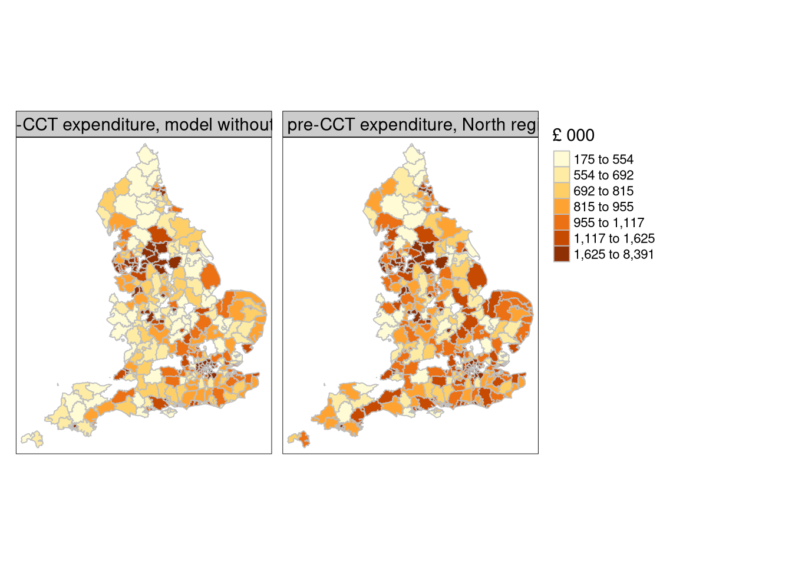

Dubin (2003) presented a contrast from simulation between geostatistical prediction and prediction from fitted spatial econometrics models.
Bivand (2002) inquired whether prediction had been neglected in spatial econometrics. Other authors rather considered missing data in spatial econometrics models, as followed up by Kato (2013). Suesse and Zammit-Mangion (2017) and Suesse (2018) continue the examination of imputing missing spatial data Goulard, Laurent, and Thomas-Agnan (2017) review what was then known about prediction using spatial econometrics models, providing implementations of existing and proposed methods in spatialreg.
11.1 Prediction and impacts
In models fitted by OLS, the marginal effect of a unit change in a numerical independent variable is equal to the regression coefficient. Taking the mean difference of predicted values before and after the incrementation, we can see that this holds:
When the spatially lagged dependent variable is included in the model (SLM, SDM, GNM), and as we have just seen, global spill-over occurs, varying in intensity as the coefficient departs from zero.
Doing this by hand and using the reduced form model: \hat{{\mathbf y}} = ({\mathbf I} - \rho {\mathbf W})^{-1}{\mathbf X}{\mathbf \beta}, we can see that the equality between the mean difference of before-and-after incrementation predictions is not with the regression coefficient for the chosen variable, byt with its total impact:
We can also use prediction in a counterfactual setting, by changing the only time-varying independent variable (real wages) in the newdata object. The model is fitted with the pre-CCT data, but the predictions are made with the fitted pre-CCT model and post-CCT data:
Difference between real net expenditure post-CCT and pre-CCT (left), and predictions made with post-CCT independent variables and pre-CCT SLM model coefficients (right)
11.3 Out-of-sample prediction
The situation becomes more complex for out-of-sample prediction. If we make predictions for a set of observations not linked in space through the spatial weights object with the set of observations used to fit the model, there are no troublesome spill-overs between the fitting set and the prediction set. Recall from chapter 6 that:
There is now an extensive literature both on the split between training and test data sets, and on the use of fitted models for prediction to areas that were un- or under-represented in the data used to fit the model (Meyer et al. 2018, 2019; Valavi et al. 2019; Schratz et al. 2019; Meyer and Pebesma 2021, 2022; Mila et al. 2022; Linnenbrink et al. 2023). These articles are accompanied by software permitting the reproduction of their findings and the application of suggested adaptations, replacing random permutations in machine learning model fitting and tuning by spatially-aware procedures.
Here we will split England into the North region and the rest, modify the Metrop factor because no "london" level is present in the North, and divide the data and neighbour objects:
Then we fit the rest of England subset using the formula without the political control variable, as there were no Conservative controlled local authorities in the North, and prepare the predictions made for the whole data set for mapping, allowing spill-over to occur between North and the rest of England:
Warning in predict.Sarlm(SLM_north, newdata = eng324, listw = lw, pred.type =
"TS", : some region.id are both in data and newdata
tm_shape(eng324) +tm_fill(c("rest_pred", "north_pred"), n=7, style="quantile", palette="YlOrBr", title="£ 000") +tm_borders(col="grey") +tm_facets(free.scales=FALSE) +tm_layout(panel.labels=c("Predicted pre-CCT expenditure, model without North region", "Predicted pre-CCT expenditure, North region model"))

Difference between real net expenditure post-CCT and pre-CCT (left), and predictions made with post-CCT independent variables and pre-CCT SLM model coefficients (right)
Bivand, Roger. 2002. “Spatial Econometrics Functions in R: Classes and Methods.”Journal of Geographical Systems 4: 405–21.
Dubin, Robin. 2003. “Robustness of Spatial Autocorrelation Specifications: Some Monte Carlo Evidence.”Journal of Regional Science 43 (2): 221–48. https://doi.org/10.1111/1467-9787.00297.
Goulard, Michel, Thibault Laurent, and Christine Thomas-Agnan. 2017. “About Predictions in Spatial Autoregressive Models: Optimal and Almostoptimal Strategies.”Spatial Economic Analysis 12 (2-3): 304–25. https://doi.org/10.1080/17421772.2017.1300679.
Kato, Takafumi. 2013. “Usefulness of the Information Contained in the Prediction Sample for the Spatial Error Model.”The Journal of Real Estate Finance and Economics 47: 169–95. https://doi.org/10.1007/s11146-011-9345-9.
Linnenbrink, J., C. Milà, M. Ludwig, and H. Meyer. 2023. “kNNDM: K-Fold Nearest Neighbour Distance Matching Cross-Validation for Map Accuracy Estimation.”EGUsphere 2023: 1–16. https://doi.org/10.5194/egusphere-2023-1308.
Meyer, Hanna, and Edzer Pebesma. 2021. “Predicting into Unknown Space? Estimating the Area of Applicability of Spatial Prediction Models.”Methods in Ecology and Evolution 12 (9): 1620–33. https://doi.org/10.1111/2041-210X.13650.
———. 2022. “Machine Learning-Based Global Maps of Ecological Variables and the Challenge of Assessing Them.”Nature Communincations 13. https://doi.org/ 10.1038/s41467-022-29838-9 .
Meyer, Hanna, Christoph Reudenbach, Tomislav Hengl, Marwan Katurji, and Thomas Nauss. 2018. “Improving Performance of Spatio-Temporal Machine Learning Models Using Forward Feature Selection and Target-Oriented Validation.”Environmental Modelling & Software 101: 1–9. https://doi.org/10.1016/j.envsoft.2017.12.001.
Meyer, Hanna, Christoph Reudenbach, Stephan Wöllauer, and Thomas Nauss. 2019. “Importance of Spatial Predictor Variable Selection in Machine Learning Applications – Moving from Data Reproduction to Spatial Prediction.”Ecological Modelling 411: 108815. https://doi.org/10.1016/j.ecolmodel.2019.108815.
Mila, Carles, Jorge Mateu, Edzer Pebesma, and Hanna Meyer. 2022. “Nearest Neighbour Distance Matching Leave-One-Out Cross-Validation for Map Validation.”Methods in Ecology and Evolution 13 (6): 1304–16. https://doi.org/10.1111/2041-210X.13851.
Schratz, Patrick, Jannes Muenchow, Eugenia Iturritxa, Jakob Richter, and Alexander Brenning. 2019. “Hyperparameter Tuning and Performance Assessment of Statistical and Machine-Learning Algorithms Using Spatial Data.”Ecological Modelling 406: 109–20. https://doi.org/10.1016/j.ecolmodel.2019.06.002.
Suesse, Thomas. 2018. “Marginal Maximum Likelihood Estimation of SAR Models with Missing Data.”Computational Statistics & Data Analysis 120: 98–110. https://doi.org/10.1016/j.csda.2017.11.004.
Suesse, Thomas, and Andrew Zammit-Mangion. 2017. “Computational Aspects of the EM Algorithm for Spatial Econometric Models with Missing Data.”Journal of Statistical Computation and Simulation 87 (9): 1767–86. https://doi.org/10.1080/00949655.2017.1286495.
Valavi, Roozbeh, Jane Elith, José J. Lahoz-Monfort, and Gurutzeta Guillera-Arroita. 2019. “blockCV: An R Package for Generating Spatially or Environmentally Separated Folds for k-Fold Cross-Validation of Species Distribution Models.”Methods in Ecology and Evolution 10 (2): 225–32. https://doi.org/10.1111/2041-210X.13107.